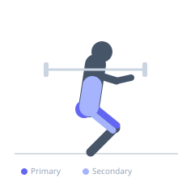

Exercise guide / Trap Bar Squat
Trap Bar Squat
A squat movement performed with a trap bar (hex bar), where the handles are at hip level and the lifter stands inside the frame. The trap bar's geometry allows a more upright torso than a traditional barbell back squat and shifts loading to the quadriceps and glutes, with reduced shear force on the lumbar spine.
Primary muscles
rectus femoris
vastus lateralis
vastus medialis
vastus intermedius
gluteus maximus
Secondary muscles
biceps femoris long head
erector spinae
adductor magnus
Stabilizers
transverse abdominis
gastrocnemius medial
Equipment
Trap Bar (Hex Bar)


Starting position
- Stand inside the trap bar with feet shoulder-width apart and the bar centered around your body. Grip the handles.
Setup
- Load the trap bar on the floor. Stand inside it, feet shoulder-width, handles at mid-thigh. Hinge to grip the handles.
Steps
- Step 1: Brace your core hard, chest up, and drive through the floor to stand.
- Step 2: Extend the hips and knees simultaneously to rise from the bottom.
- Step 3: Lock out fully at the top with hips and knees extended.
- Step 4: Lower the bar back to the floor with control, maintaining a neutral spine.
Coaching cues
- Push the floor away
- Chest up throughout
Breathing
- Inhale and brace before the pull. Exhale at the top.
Range of motion
- Full extension at lockout. Lower under control — do not bounce the plates off the floor.
Tempo
- 2-0-2-0
Common mistakes
- Squatting with excessive forward torso lean (turning it into a deadlift pattern)
- Allowing the knees to cave inward
Safety
- The trap bar squat is excellent for beginners — the neutral grip is easy to learn
Training
- strength: 3–8 reps
- hypertrophy: 8–15 reps
- strength: 3–5 sets
- hypertrophy: 3–4 sets
- Rest: {'strength': 180, 'hypertrophy': 90}